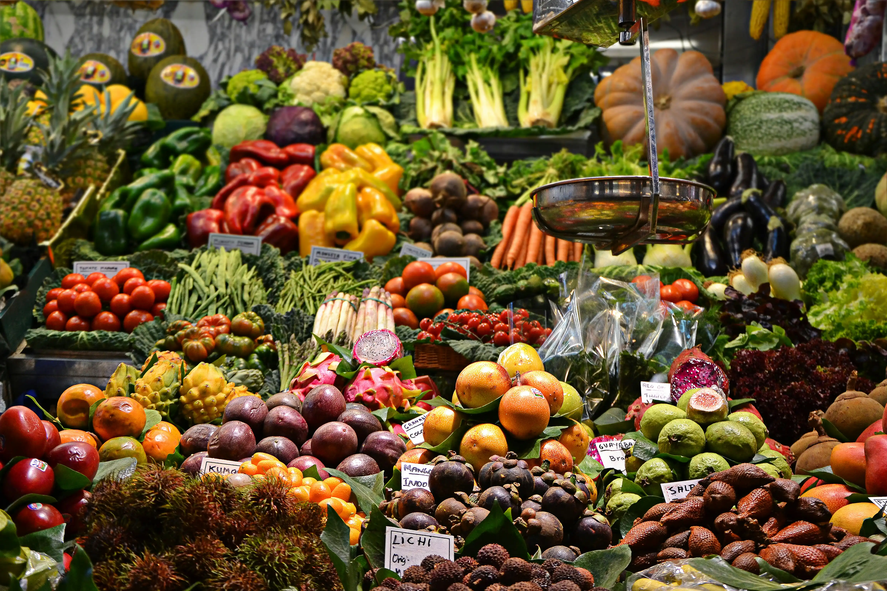

Nosotros
Conectamos el campo chileno con tu hogar desde hace más de 6 años
Nuestra Historia
HuertoHogar nació con una visión simple pero poderosa: llevar la frescura y calidad de los productos del campo directamente a tu mesa.
Durante más de 6 años, hemos operado en 9 puntos estratégicos de Chile, desde Santiago hasta Puerto Montt, construyendo puentes entre agricultores locales y familias que valoran la alimentación saludable.

Misión
Proporcionar productos frescos y de calidad directamente desde el campo, garantizando frescura en cada entrega y fomentando la conexión entre consumidores y agricultores locales.
Visión
Ser la tienda online líder en distribución de productos frescos en Chile, reconocida por nuestra calidad excepcional y compromiso con la sostenibilidad.
Nuestros Valores
Los principios que guían nuestro trabajo diario
Sostenibilidad
Promovemos prácticas agrícolas responsables con el medio ambiente
Calidad
Garantizamos productos frescos y de la más alta calidad
Confianza
Construimos relaciones duraderas basadas en la transparencia
Eficiencia
Entregamos tus productos frescos en tiempo récord
Nuestras Ubicaciones
Presentes en las principales ciudades de Chile
Región Metropolitana
Zona Sur
¿Listo para experimentar la diferencia?
Únete a miles de familias que ya disfrutan de productos frescos y naturales